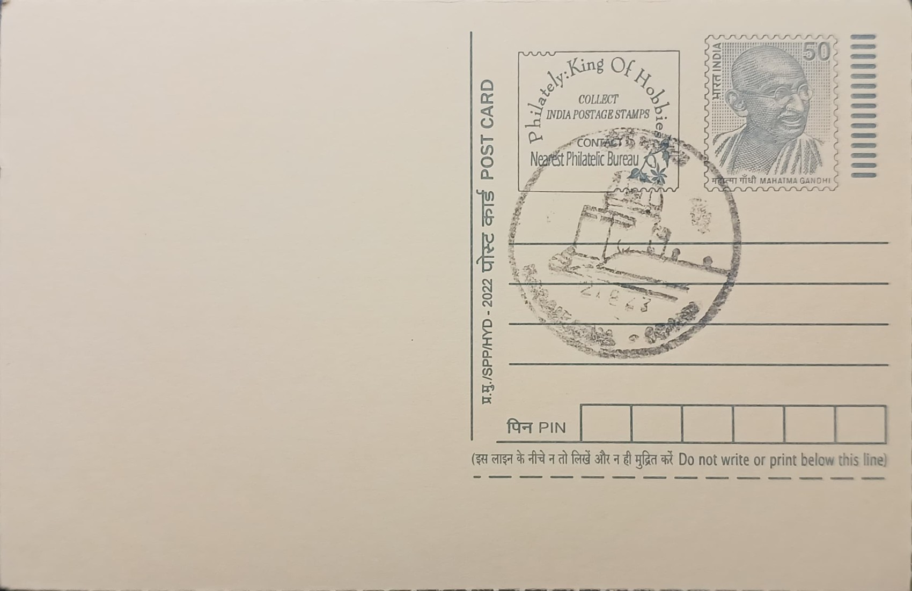

Kodaikanal Observatory
கொடைக்கானல் வானாய்வுக் கூடம்


The Kodaikanal Solar Observatory owes its founding to a practical crisis rather than a single discovery: the severe droughts and monsoon failures of 1875 to 1878 across India prompted the colonial government's Famine Commission to recommend systematic solar and meteorological observation, on the theory that sunspot activity might be linked to rainfall patterns. The task of locating a suitable site fell to Charles Michie Smith, then of the Madras Observatory, who surveyed several hill locations before recommending Kodaikanal in the Palani Hills for its clear, dust-free air, low humidity and unusually stable atmosphere, qualities ill-suited to the coastal haze that limited observations at Madras.
The foundation stone of the new observatory was laid in 1895 by Lord Wenlock, then Governor of Madras, and the institution was formally constituted on 1 April 1899 as successor to the Madras Observatory, which had itself been founded in 1786 and ranks among the oldest astronomical establishments in Asia. Regular solar observations at Kodaikanal commenced on 14 March 1901 under Michie Smith as its first director, and the site quickly developed into one of the foremost centres for solar physics in the world, valued particularly for its unbroken, high-quality photographic record of the Sun rather than for any single discovery.
Observers at Kodaikanal recorded sunspots almost daily using photoheliographs and spectroheliographs, producing position and shape data for sunspot groups that, according to Michie Smith's own reports, were logged on as many as 343 of 365 days in a single year such as 1904. This daily photographic archive, begun in the observatory's earliest years and maintained with few interruptions since, now forms one of the longest continuous sunspot and solar activity datasets anywhere, and digitised versions of these century-old plates continue to be used by solar physicists studying long-term solar cycles and historical space weather. The observatory's principal instrument for decades was a Littrow-type spectrograph paired with a 60-centimetre Grubb Parsons coelostat mounted on an 11-metre tower, which fed sunlight through a 60-metre underground tunnel to form a large solar image for detailed spectroscopic study.
In 1971 the Kodaikanal Observatory became the founding campus of the newly created Indian Institute of Astrophysics, an autonomous research institute that later moved its administrative headquarters to Bengaluru while retaining Kodaikanal as a working solar observing station. The campus has since been fitted with newer purpose-built instruments, including a twin telescope commissioned in 2008 for simultaneous white-light and Ca-K imaging, an H-alpha telescope added in 2014, and the White-light Active Region Monitor, or WARM telescope, operating since January 2016, each extending the site's original sunspot-monitoring mission with modern digital imaging rather than replacing it outright.
The observatory's colonial-era bungalows, laboratories and the tower telescope structure still stand amid the Palani Hills' eucalyptus and shola forest, and the campus houses a small public museum, run by the Indian Institute of Astrophysics, that displays historical instruments, photographic plates and exhibits on solar science for visitors to Kodaikanal town. Day-to-day solar monitoring continues to be carried out by resident observers and researchers attached to the Institute, feeding data into international solar-cycle archives alongside newer observatories, which keeps this 19th-century hill station facility an active contributor to present-day heliophysics rather than a retired historical site.
| Date of Introduction | September 5, 1979 |
|---|---|
| Address | Sub Postmaster, |
| Kodaikanal SO, | |
| Dindigul (dt.), Tamil Nadu - 624101. |